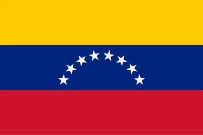

About Me
My name is Julio Reyes. Born and currently living in Venezuela, I'm a Software development student who has always had a interest in the inner workings of machines and software. My other interests include music, art, and sports.
Zulia, Venezuela

Venezuela is a country with beautiful landscapes, amazing sights, and a myriad of popular beaches, islands, as well as mountains that showcase the amount of cultural diversity and history.